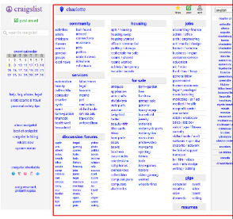
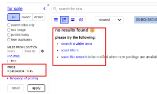
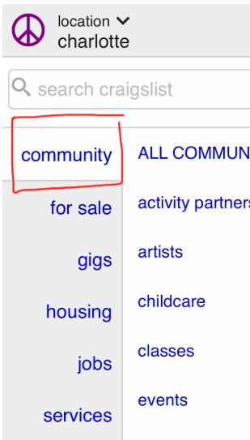
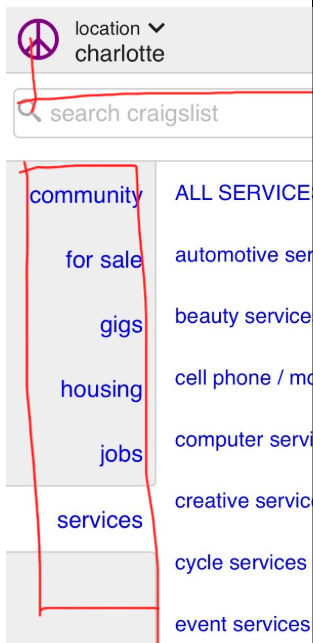
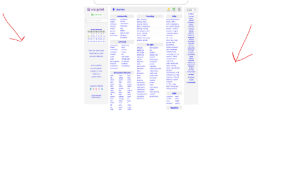
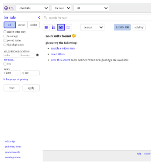

Week 1 – Heuristic Evaluation (Craigslist)
Overview
In Week 1, we conducted a usability critique of Craigslist using Nielsen’s 10 usability heuristics. We identified key usability issues and mapped each problem to a violated heuristic.
Cluttered, Text-Heavy Interface

Description
The homepage presents a dense wall of text with no visual hierarchy. All links are equally sized and arranged in long lists, forcing users to read everything to understand where to go.
Heuristic Violation
Aesthetic and Minimalist Design: The interface includes excessive information with no prioritization, making it difficult for users to focus on key actions.
Fragile Search Filters

Description
The search system allows invalid inputs such as negative prices, contradictory ranges, and incorrect zip codes without validation. Users only see a “no results found” message.
Heuristic Violation
Error Prevention: The system does not prevent invalid inputs or provide feedback, allowing users to make avoidable mistakes.
Inconsistent Navigation Structure

Description
Categories are grouped inconsistently, with some sections containing long lists while others are much shorter. This forces users to scan multiple areas to locate content.
Heuristic Violation
Consistency and Standards: Similar types of content are not organized consistently, making it harder for users to rely on predictable patterns.
Lack of Guidance for New Users

Description
The platform provides little onboarding or explanation of how to navigate, search, or post listings, leaving new users unsure how to begin.
Heuristic Violation
Help and Documentation: The system lacks accessible guidance, forcing users to rely on trial and error.
Unbalanced Use of White Space

Description
Large portions of the page feel empty and outdated, while other areas are overly dense. This imbalance creates a confusing visual experience.
Heuristic Violation
Aesthetic and Minimalist Design: Poor use of space disrupts visual balance and reduces usability.
Poor Visibility of System Status

Description
When users perform actions like filtering or searching, there is little feedback explaining what is happening or why results may be empty.
Heuristic Violation
Visibility of System Status: The system does not provide clear or timely feedback, leaving users uncertain about the results of their actions.